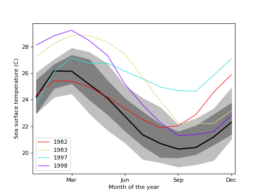

statsmodels.graphics.functional.fboxplot¶
-
statsmodels.graphics.functional.fboxplot(data, xdata=None, labels=None, depth=None, method='MBD', wfactor=1.5, ax=None, plot_opts=None)[source]¶ Plot functional boxplot.
A functional boxplot is the analog of a boxplot for functional data. Functional data is any type of data that varies over a continuum, i.e. curves, probability distributions, seasonal data, etc.
The data is first ordered, the order statistic used here is banddepth. Plotted are then the median curve, the envelope of the 50% central region, the maximum non-outlying envelope and the outlier curves.
- Parameters
- datasequence
ofndarraysor 2-Dndarray The vectors of functions to create a functional boxplot from. If a sequence of 1-D arrays, these should all be the same size. The first axis is the function index, the second axis the one along which the function is defined. So
data[0, :]is the first functional curve.- xdata
ndarray,optional The independent variable for the data. If not given, it is assumed to be an array of integers 0..N-1 with N the length of the vectors in data.
- labelssequence
ofscalar orstr,optional The labels or identifiers of the curves in data. If given, outliers are labeled in the plot.
- depth
ndarray,optional A 1-D array of band depths for data, or equivalent order statistic. If not given, it will be calculated through banddepth.
- method{‘MBD’, ‘BD2’},
optional The method to use to calculate the band depth. Default is ‘MBD’.
- wfactor
float,optional Factor by which the central 50% region is multiplied to find the outer region (analog of “whiskers” of a classical boxplot).
- ax
AxesSubplot,optional If given, this subplot is used to plot in instead of a new figure being created.
- plot_opts
dict,optional A dictionary with plotting options. Any of the following can be provided, if not present in plot_opts the defaults will be used:
- 'cmap_outliers', a Matplotlib LinearSegmentedColormap instance. - 'c_inner', valid MPL color. Color of the central 50% region - 'c_outer', valid MPL color. Color of the non-outlying region - 'c_median', valid MPL color. Color of the median. - 'lw_outliers', scalar. Linewidth for drawing outlier curves. - 'lw_median', scalar. Linewidth for drawing the median curve. - 'draw_nonout', bool. If True, also draw non-outlying curves.
- datasequence
- Returns
- fig
Figure If ax is None, the created figure. Otherwise the figure to which ax is connected.
- depth
ndarray A 1-D array containing the calculated band depths of the curves.
- ix_depth
ndarray A 1-D array of indices needed to order curves (or depth) from most to least central curve.
- ix_outliers
ndarray A 1-D array of indices of outlying curves in data.
- fig
See also
Notes
The median curve is the curve with the highest band depth.
Outliers are defined as curves that fall outside the band created by multiplying the central region by wfactor. Note that the range over which they fall outside this band does not matter, a single data point outside the band is enough. If the data is noisy, smoothing may therefore be required.
The non-outlying region is defined as the band made up of all the non-outlying curves.
References
- [1] Y. Sun and M.G. Genton, “Functional Boxplots”, Journal of Computational
and Graphical Statistics, vol. 20, pp. 1-19, 2011.
- [2] R.J. Hyndman and H.L. Shang, “Rainbow Plots, Bagplots, and Boxplots for
Functional Data”, vol. 19, pp. 29-45, 2010.
Examples
Load the El Nino dataset. Consists of 60 years worth of Pacific Ocean sea surface temperature data.
>>> import matplotlib.pyplot as plt >>> import statsmodels.api as sm >>> data = sm.datasets.elnino.load(as_pandas=False)
Create a functional boxplot. We see that the years 1982-83 and 1997-98 are outliers; these are the years where El Nino (a climate pattern characterized by warming up of the sea surface and higher air pressures) occurred with unusual intensity.
>>> fig = plt.figure() >>> ax = fig.add_subplot(111) >>> res = sm.graphics.fboxplot(data.raw_data[:, 1:], wfactor=2.58, ... labels=data.raw_data[:, 0].astype(int), ... ax=ax)
>>> ax.set_xlabel("Month of the year") >>> ax.set_ylabel("Sea surface temperature (C)") >>> ax.set_xticks(np.arange(13, step=3) - 1) >>> ax.set_xticklabels(["", "Mar", "Jun", "Sep", "Dec"]) >>> ax.set_xlim([-0.2, 11.2])
>>> plt.show()
(Source code, png, hires.png, pdf)

{kind=link}
{kind=link}